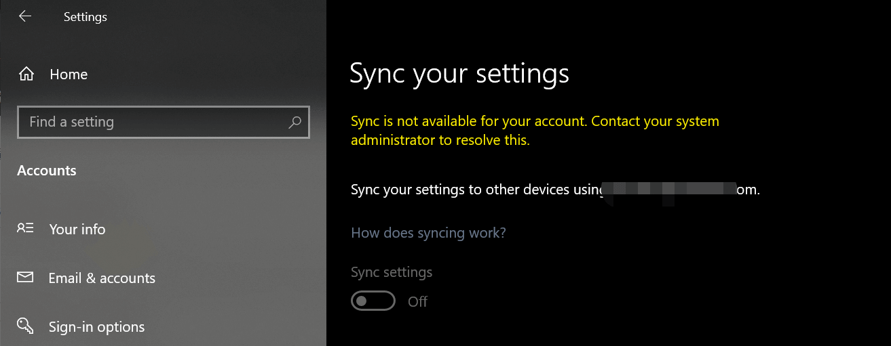
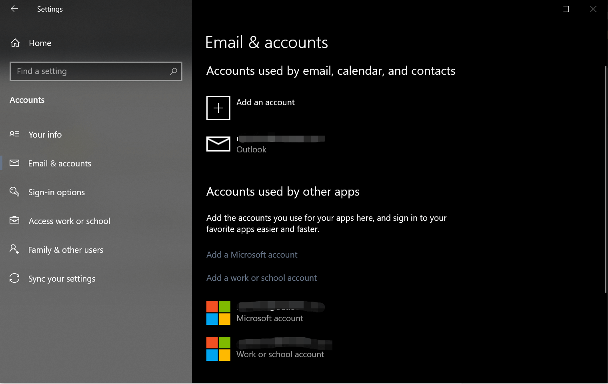
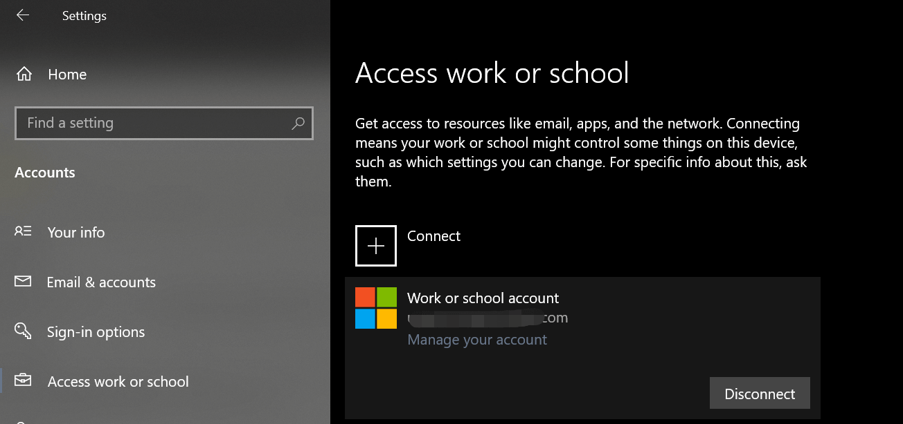

这篇文章上次修改于 1056 天前，可能其部分内容已经发生变化，如有疑问可询问作者。

最近发现设置里的同步设置选项无法启用，虽然我只有这一台 Windows 电脑，但是无法打开这一功能还是让我有点别扭。经过多方搜索终于发现问题了，原来是我添加了另一个账户用来使用 office 365 导致的。

在 sync your settings 里发现 sync settings 按钮是灰色的，然后上方有提示信息：sync is not available for your account, contact your system administrator to solve this.

在Email & account 里可以看到我还添加了另一个 work or school account，如果添加了这个账户就会引起无法启动 sync。
在 access work or school 里点击对应账户，点击 disconnect 即可退出这个账户：

退出后重启系统，查看 sync 功能已经可以启用了。
这样处理后就无法使用 work account 来激活 office 365 了，有点儿得不偿失。所以我在知道原因后就再次添加回来账户了。
没有评论